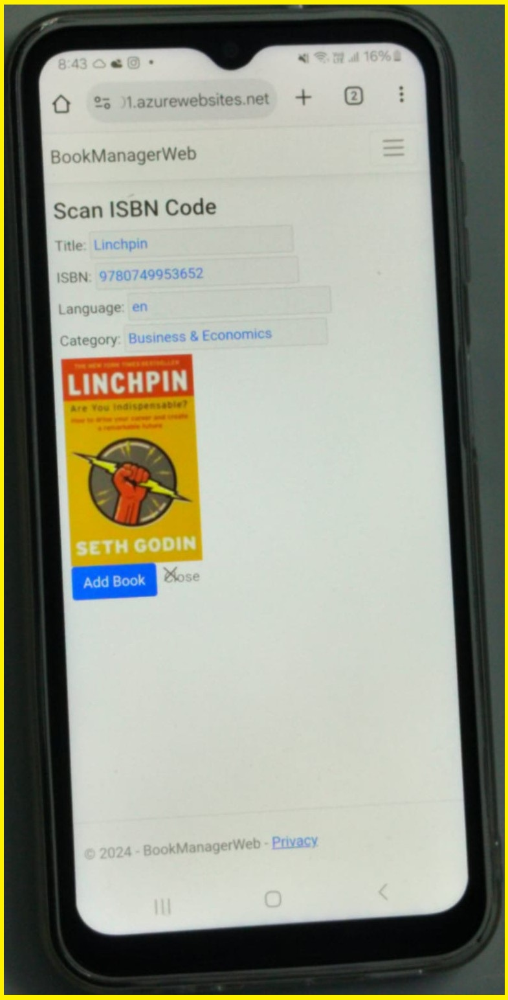

Book Manager Application
Book Manager
is a web application for managing purchased books. This app helps keep track of the books we have purchased.
It includes a search feature to check whether a book with a given title has already been purchased.
Technologies used
- C# (.NET8)
- Razor pages application
- .NET Web API
- Azure AD B2C
- Microsoft SQL DB
Features supported
- User registration and sign-in
- Add book by scanning the ISBN
- Add book by providing all the details manually
- List all the purchased books
- Search book by title
Application Demo: BookManagerAppDemo
Github repo:
Application URL: Book Manager App
Screenshots of the application
- Sign-up screen
- Sign-in screen

- Landing screen

- Scan ISBN screen

- Add New Book screen
- Index page listing all the books in the personal library
- Add Book manually screen

Note:
-
The application uses the free version of Azure SQL DB, so if the database has not been accessed for a while,
it may become unavailable. When you try to log in, the database will be accessed, but it may take some time to start,
resulting in an exception. I kindly request you to retry after 30 seconds, and the database should be up,
allowing you to log in successfully.
-
This application also uses the free version of the Azure App Service Plan, so the app service may not be available at all times.